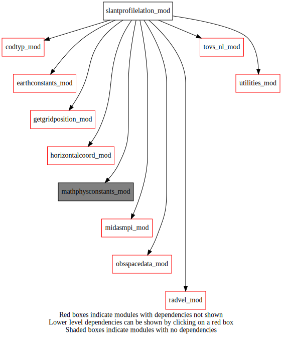
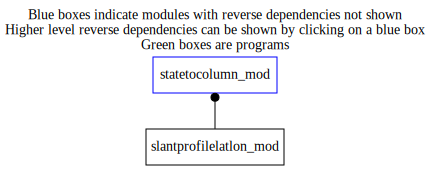

Dependency Diagrams:
 Direct Dependency Diagram¶
 Reverse Dependency Diagram¶
Description
MODULE slantprofilelatlon_mod (prefix=’slp’ category=’5. Observation operators’)
- Purpose
To calculate latitudes/longitudes on slant-path based on ColumnData.
Quick access
- Routines
findintersectlatlon(),findintersectlatlonradar(),heightbilinearinterp(),slp_calclatlonradar(),slp_calclatlonro(),slp_calclatlontovs()Needed modules
midasmpi_mod: MODULE midasMpi_mod (prefix=’mmpi’ category=’8. Low-level utilities and constants’)
earthconstants_mod: MODULE earthConstants_mod (prefix=’ec’ category=’8. Low-level utilities and constants’) Prefixes: ec_ (Earth constants), for miscellaneous values from diverse sources
mathphysconstants_mod: MODULE MathPhysConstants_mod (prefix=’mpc’ category=’8. Low-level utilities and constants’)
utilities_mod: MODULE utilities_mod (prefix=’utl’ category=’8. Low-level utilities and constants’)
obsspacedata_mod: MODULE obsSpaceData_mod (prefix=’obs’ category=’6. High-level data objects’)
horizontalcoord_mod: MODULE HorizontalCoord_mod (prefix=’hco’ category=’7. Low-level data objects’)
tovs_nl_mod: MODULE tovs_nl (prefix=’tvs’ category=’5. Observation operators’)
codtyp_mod: MODULE codtyp_mod (prefix=’codtyp’ category=’8. Low-level utilities and constants’)
getgridposition_mod: MODULE getGridPosition_mod (prefix=’gpos’ category=’8. Low-level utilities and constants’)
radvel_mod: MODULE radvel_mod (prefix=’rdv’ category=’5. Observation operators’)Variables
Subroutines and functions
- subroutine slantprofilelatlon_mod/slp_calclatlontovs(obsspacedata, hco, headerindex, height3d_t_r4, height3d_m_r4, latslantlev_t, lonslantlev_t, latslantlev_m, lonslantlev_m, latslantlev_s, lonslantlev_s)¶
- Purpose
call the computation of lat/lon on the slant path for radiance observations, iteratively. To replace the vertical columns with line-of-sight slanted columns.
- Arguments
obsspacedata [struct_obs ,in]
hco [struct_hco ,in]
headerindex [integer ,in]
height3d_t_r4 (*,*,*) [real ,in]
height3d_m_r4 (*,*,*) [real ,in]
latslantlev_t (*) [real ,out]
lonslantlev_t (*) [real ,out]
latslantlev_m (*) [real ,out]
lonslantlev_m (*) [real ,out]
latslantlev_s [real ,out]
lonslantlev_s [real ,out]
- Called from
- Call to
obs_headelem_r(),tvs_getcorrectedsatelliteazimuth(),obs_headelem_i(),codtyp_get_codtyp(),heightbilinearinterp(),findintersectlatlon()
- subroutine slantprofilelatlon_mod/findintersectlatlon(obsspacedata, headerindex, height_r4, azimuthangle, latslant, lonslant)¶
- Purpose
Computation of lat/lon of the intersection between model level and the slant line-of-sight for radiance observations.
- Arguments
obsspacedata [struct_obs ,in]
headerindex [integer ,in]
height_r4 [real ,in]
azimuthangle [real ,in]
latslant [real ,out]
lonslant [real ,out]
- Called from
- Call to
- subroutine slantprofilelatlon_mod/heightbilinearinterp(lat, lon, hco, height_r4, heightinterp_r4)¶
- Purpose
To interpolate the 2D height field to the obs location
- Arguments
lat [real ,in]
lon [real ,in]
hco [struct_hco ,in]
height_r4 (*,*) [real ,in]
heightinterp_r4 [real ,out]
- Called from
slp_calclatlontovs(),slp_calclatlonro(),findintersectlatlonradar()- Call to
- subroutine slantprofilelatlon_mod/slp_calclatlonro(obsspacedata, hco, headerindex, height3d_t_r4, height3d_m_r4, latslantlev_t, lonslantlev_t, latslantlev_m, lonslantlev_m, latslantlev_s, lonslantlev_s)¶
- Purpose
call the computation of lat/lon on the slant path for GPSRO observations, iteratively. To replace the vertical columns with slanted columns.
- Arguments
obsspacedata [struct_obs ]
hco [struct_hco ]
headerindex [integer ,in]
height3d_t_r4 (*,*,*) [real ,in]
height3d_m_r4 (*,*,*) [real ,in]
latslantlev_t (*) [real ,out]
lonslantlev_t (*) [real ,out]
latslantlev_m (*) [real ,out]
lonslantlev_m (*) [real ,out]
latslantlev_s [real ,out]
lonslantlev_s [real ,out]
- Called from
- Call to
- subroutine slantprofilelatlon_mod/slp_calclatlonradar(obsspacedata, hco, headerindex, height3d_t_r4, height3d_m_r4, latslantlev_t, lonslantlev_t, latslantlev_m, lonslantlev_m, latslantlev_s, lonslantlev_s)¶
- Purpose
call the computation of lat/lon on the slant path for radar observations, iteratively. To replace the vertical columns with radar beam columns .
- Arguments
obsspacedata [struct_obs ,in]
hco [struct_hco ,in]
headerindex [integer ,in]
height3d_t_r4 (*,*,*) [real ,in] :: in
height3d_m_r4 (*,*,*) [real ,in] :: in
latslantlev_t (*) [real ,out]
lonslantlev_t (*) [real ,out]
latslantlev_m (*) [real ,out]
lonslantlev_m (*) [real ,out]
latslantlev_s [real ,out]
lonslantlev_s [real ,out]
- Called from
- Call to
- subroutine slantprofilelatlon_mod/findintersectlatlonradar(antennalat, antennalon, beamelevation, beamazimuth, radaraltitude, beamrangestart, beamrangeend, hco, field2d_height, latslant, lonslant)¶
- Arguments
antennalat [real ,in]
antennalon [real ,in]
beamelevation [real ,in]
beamazimuth [real ,in]
radaraltitude [real ,in] :: in
beamrangestart [real ,in]
beamrangeend [real ,in]
hco [struct_hco ,in]
field2d_height (hco%ni,hco%nj) [real ,in] :: in
latslant [real ,out]
lonslant [real ,out]
- Called from
- Call to
{kind=link}
{kind=link}